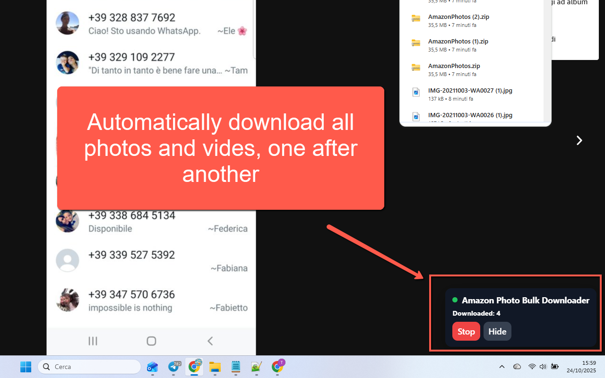
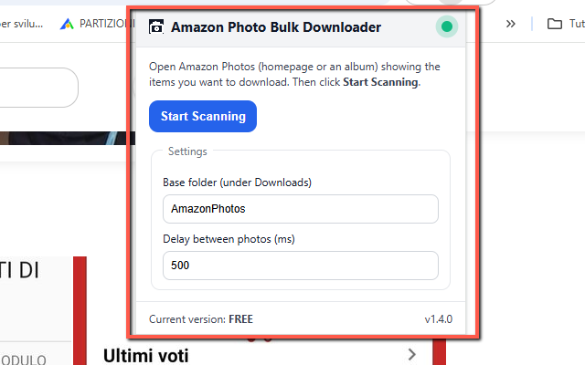

Amazon Photo Bulk Downloader
Amazon Photo Bulk Downloader lets you save or remove large sets of photos (and videos) from Amazon Photos with a single click. It works directly on the Amazon Photos website: the extension opens the viewer, prepares the toolbar, and clicks the page’s own Download button (or "Move to trash") for each item—so all files are user-authorized, compatible and reliable.
You can use it from Home, Albums, People, Places, and Folders views. Just show the items you want, set an optional base folder (files are saved under Downloads/<BaseFolder>/…) and press Start Scanning. The extension walks through each item (Next / Arrow →), toggles the viewer toolbar if needed, and clicks Download for you—until you hit Stop. A tiny green pulsing dot in the popup lets you know when the extension is “ready” on an Amazon Photos tab.
🚀 Quick Start
- Install Amazon Photo Bulk Downloader from the Chrome Web Store
- Open Amazon Photos (home, an album, a folder, People or Places view) showing the items you want to download.
- Click the extension icon to open the popup. Then choose if you want to download or delete photos.
- Optionally set a Base folder name (files will go under
Downloads/BaseFolder/…). - Press Start Scanning:
- The viewer opens automatically and the toolbar is toggled if needed.
- The extension clicks the page’s own Download button for each item.
- Items are advanced via Next / Arrow → until you press Stop.
- Use Stop anytime to end the run.
- Tip: For automatic file placement into your base folder, consider turning off Chrome’s “Ask where to save each file before downloading” in Chrome settings.
📷 Screenshots


✅ Main Features
- Automates opening each photo or video in the Amazon Photos viewer.
- Clicks the page’s own Download button for every item (user-authorized downloads).
- Moves quickly through items using Next / Arrow → until you hit Stop.
- Works from Home, Albums, People, Places and Folders views.
- Lets you set a Base folder: files are saved under
Downloads/<BaseFolder>/…. - Shows a tiny in-popup green pulsing dot when the extension is ready on an Amazon Photos tab.
- Designed to follow Amazon’s own UI flow (viewer, toolbar, Download button) for robust behavior.
- Compatible with multiple amazon.* domains (e.g.
amazon.it,amazon.comand others).
💸 Free vs PRO
- FREE mode: up to 25 downloads per run.
- PRO mode: unlocks unlimited downloads with a one-time unlock code.
- Your current mode (FREE or PRO) is shown in the popup and remembered between sessions.
- When the free limit is reached, the unlock dialog appears automatically with a field to enter your code and a purchase link.
🔒 Permissions (and why)
- downloads — needed to save the files and rename them into your chosen base folder under
Downloads/…. - activeTab / scripting / tabs — used to inject the content script into your Amazon Photos tab when you press Start, open the viewer, toggle the toolbar and click the Download button.
- storage — used to remember your base folder name and PRO/FREE status locally on your device.
- Host permissions (various
https://www.amazon.*domains) — required to interact with Amazon Photos pages across different country domains.
❓ FAQ & Notes
Does it work on all Amazon domains?
Yes, it is designed to work across amazon.* domains such as amazon.com, amazon.it, and others, as long as you are using the standard Amazon Photos interface.
Why don’t I see files in my base folder?
Make sure the base folder is set in the popup (for example AmazonPhotos) and that Chrome’s “Ask where to save each file before downloading” option is turned off; otherwise, each download may stop for a save dialog and break the automatic placement.
Renaming doesn’t seem to apply. What can I do?
If file renaming or base folder placement doesn’t work as expected, another extension might be intercepting downloads. Try disabling other download managers or similar extensions, then reload Amazon Photos and try again.
Amazon changed something and the toolbar doesn’t toggle.
If Amazon updates their UI, the automatic toolbar toggle may fail occasionally. In that case, try clicking the viewer’s toolbar toggle once manually. The extension is designed to handle most cases automatically, but manual help may be needed after major UI changes.
Is any of my data collected?
No. The extension runs entirely on your device. It does not transmit your photos, files, or browsing data anywhere. Only minimal settings (base folder, mode, options) are saved locally using Chrome’s storage.
Is this an official Amazon product?
No. This extension is not affiliated with or endorsed by Amazon. All trademarks are the property of their respective owners.